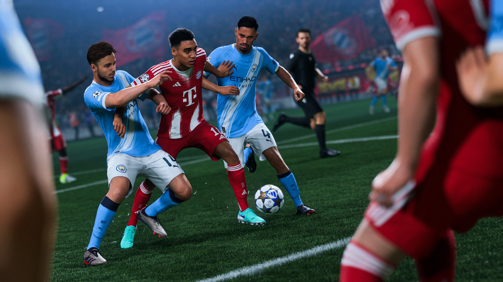

Some of my best football memories didn’t happen on a pitch. They happened on a sofa, controller in hand, arguing with my friends about who got to be Barcelona. Pro Evolution Soccer and FIFA weren’t just games for us—they were where we learned the names of players we had never seen on TV, where we built our dream teams in Master League, and where rivalries started that lasted a lot longer than the match.
Today, something feels off. And it isn’t the graphics. Look at a screenshot of a modern football game and it’s almost frightening how real it looks: the kits, the stadiums, the way a shirt moves when a player turns. On paper, these are the best football games ever made. So why do so many of us feel like they’re worse than ever?
Part of the answer is that every year feels like the same game with a new number on the box. A few animations change, the squads are updated, the menus get a new colour, and the price stays the same. When I was younger, a new edition felt like an event. Now it often feels like a subscription you pay for once a year.
The bigger reason, I think, is where the money went. Ultimate Team modes turned football games into card collections. You don’t build a team anymore; you open packs and hope. It’s incredibly profitable, and you can feel the whole game bending around it: the attention, the updates, the events. Meanwhile, the offline modes that so many of us grew up with—career mode, Master League, simple matches with friends—get far less love than they used to. Some countries have even started pushing back against paid loot boxes, which says a lot about how far things have drifted from just playing football.
Then there’s the lack of real competition. For years, PES and FIFA pushed each other. When one got better at gameplay, the other had to answer. That rivalry is mostly gone. PES became eFootball, a free-to-play game whose launch was rough enough to become a meme. FIFA lost its name and became EA Sports FC. Without a real rival breathing down its neck, there’s less reason for anyone to take risks.
To be clear, these games still sell millions of copies. The decline I’m talking about isn’t in the sales numbers—it’s in the feeling. The joy of discovering something new, the surprise of a game that tried to do something different, the sense that the people making it loved football as much as we did.
I still play. I probably always will. But I hope the next release remembers what made us fall in love in the first place: not the packs, not the currency, just two friends, one sofa, and ninety virtual minutes that felt like everything.